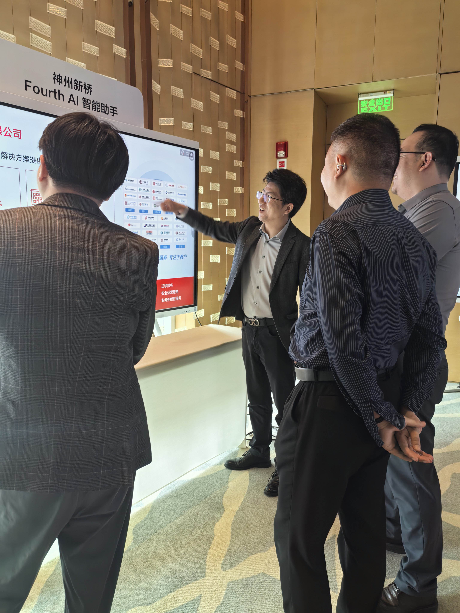

聚势华为生态，赋能千行百业
3月30日，以"商业AI·数智新程"为主题的北京政企商业市场ISV×SI生态共建活动圆满举办。北京神州新桥科技有限公司作为华为核心生态伙伴受邀出席，与众多行业同仁齐聚一堂，共同展示AI技术落地实践成果，持续深化开放共赢、协同共进的数智生态建设。

华为搭台，共启数智新局
活动中，华为中国政企解决方案规划与集成验证部部长朱丹、华为北京政企Marketing与解决方案销售部部长于督分别致辞，系统阐述了华为在"行业+AI"发展中的生态战略与伙伴支持方向——依托昇腾算力与全栈AI解决方案，通过六大区域OpenLab及云上平台，为伙伴提供从技术支撑到市场拓展的全面赋能。
华为北京政企昇腾产业技术总监郑杰深入解读了行业AI发展风向，强调昇腾算力在安全可信、高性能、本地化部署方面的核心优势，这与神州新桥长期深耕企业级AI落地的方向高度契合，也为双方在政企数智化场景的进一步协作奠定了基础。
活动现场举行了ISV和SI合作框架协议签约仪式。神州新桥作为华为长期合作的SI伙伴参与其中，双方将持续深化在企业数智化进程中的协同合作，共同推动AI技术在政企场景的落地与规模化应用。
登台发言，展示核心能力
在合作伙伴分享环节，北京神州新桥科技有限公司AI事业部总经理迟宝佳向与会嘉宾系统介绍了公司的核心能力与创新实践。

迟宝佳表示，公司专注于AI大模型与行业需求的链接、赋能与集成，依托AI技术服务与AI应用产品两大中心，构建安全灵活的AI服务体系。在智能办公、数字营销、知识问答等场景，神州新桥已将AI能力转化为可直接落地的行业解决方案。

产品方案，技术实力一览
神州新桥的AI产品体系以国产算力为底座，基于鲲鹏+昇腾+Atlas构建自主可控的基础设施，并深度集成Qwen、DeepSeek等主流大模型，形成从底层算力到上层应用的完整闭环。
- AI数字人员工：具备自然语言交互能力，可承接客服、引导、问答等场景，支持全终端部署
- 企业级向量知识库：完整覆盖数据采集→处理→向量索引→召回统计的RAG全链路，支持大文档处理与智能检索
- 镜像企业：将企业知识体系数字化，构建可查询、可运营的智能知识中台
- 支持政策分析、智能问答、会议纪要、辅助研发、智能客服、演讲材料生成等典型政企场景
- 全终端覆盖：浏览器插件 / 网页端 / 桌面端 / APP / 企业微信 / 飞书，无缝融入既有工作流
- 三层安全防护体系（应用层 / 服务层 / 模型层），满足政务、金融等高合规场景需求
在华为昇腾算力与全栈AI解决方案的支撑下，神州新桥将自身在大模型集成与行业场景理解方面的积累与华为生态深度结合，为政务、金融、科研等重点领域提供从咨询、部署到运维的一站式AI落地服务。
北京神州新桥科技有限公司将继续深耕"伙伴+华为"生态，聚焦智能办公、数字营销、知识问答等优势领域，以扎实的产品能力和丰富的落地经验，携手华为共赢商业AI时代发展新机遇。